How I Turned a Hobby Into a Career in Web Development
My Crazy Story Into Tech
by Tairema (Tai) Dailey
@tairemadailey
For starters...I was like this girl...
Yep...this Twilight
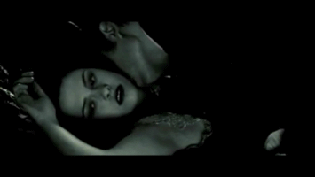
( Edward + Bella Shipper === 🙋♀️ )
How did I manage that???
It started with
Fansites
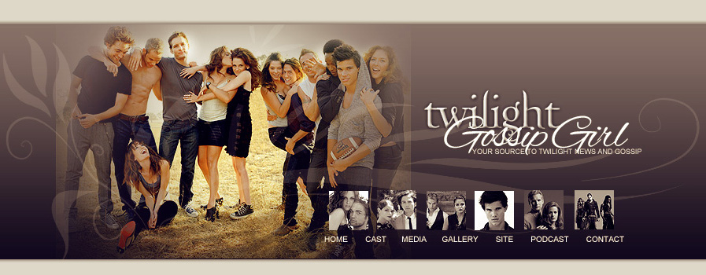
[screenshot from my first fansite]
But before the fansite, it started with a community on twitter that lead to me learning...
More Fansites I started
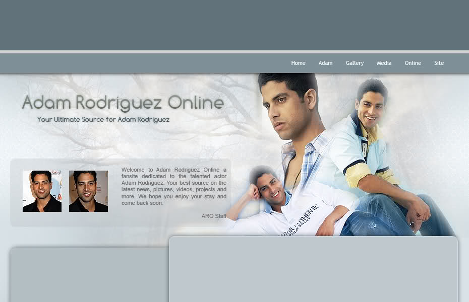 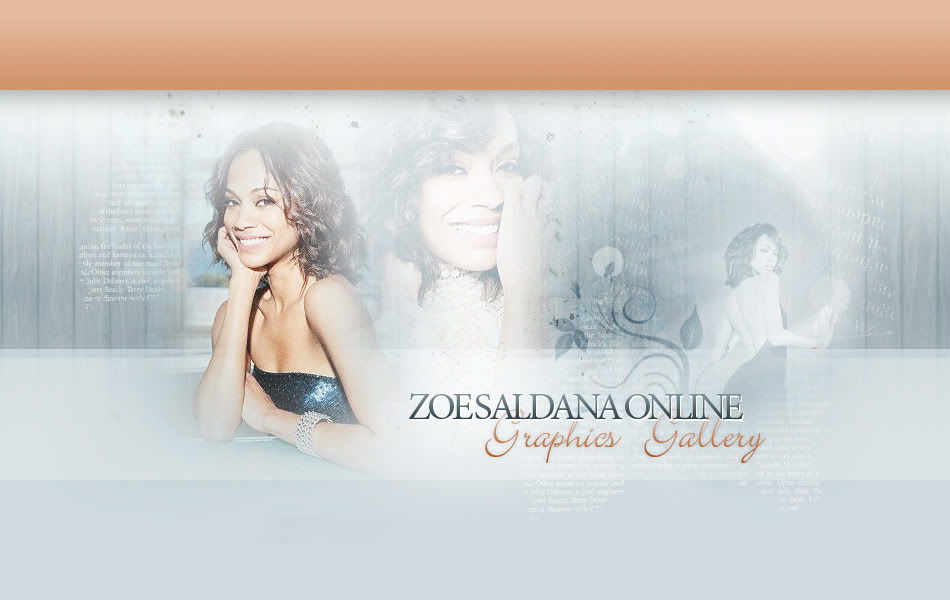
My first one pager icons sites I built....
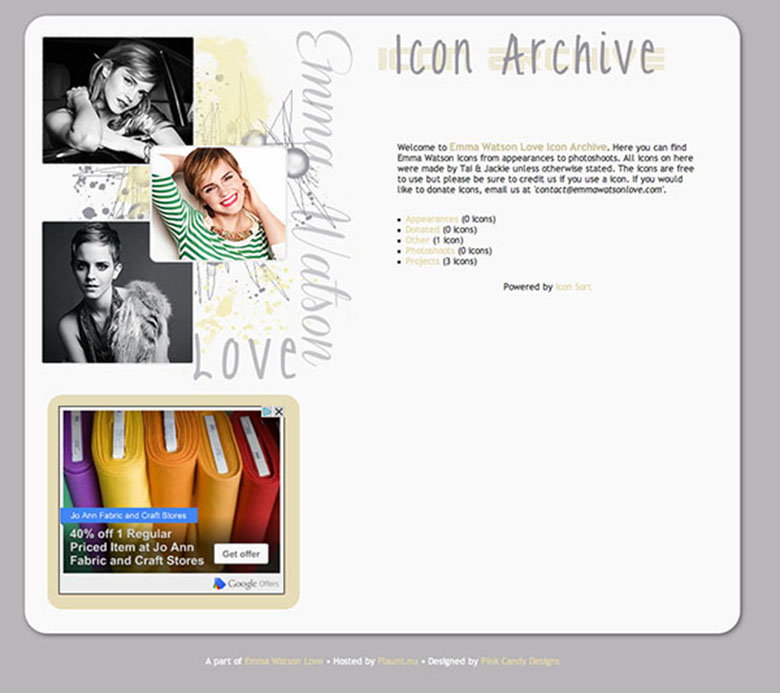 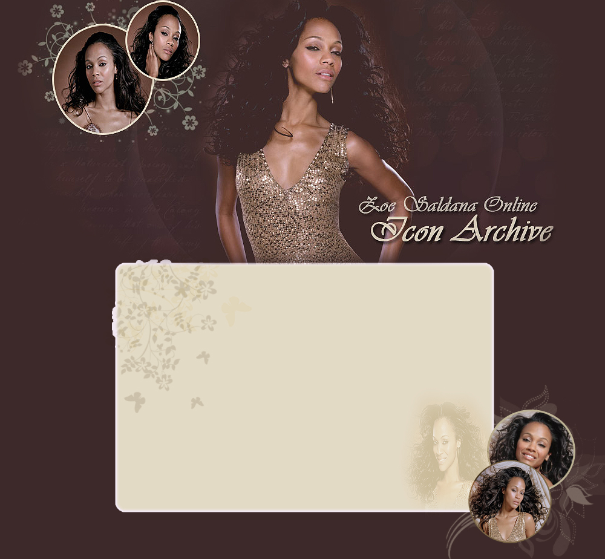
Started designing my own sites...
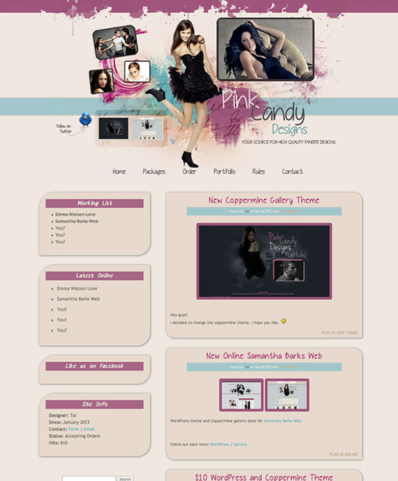 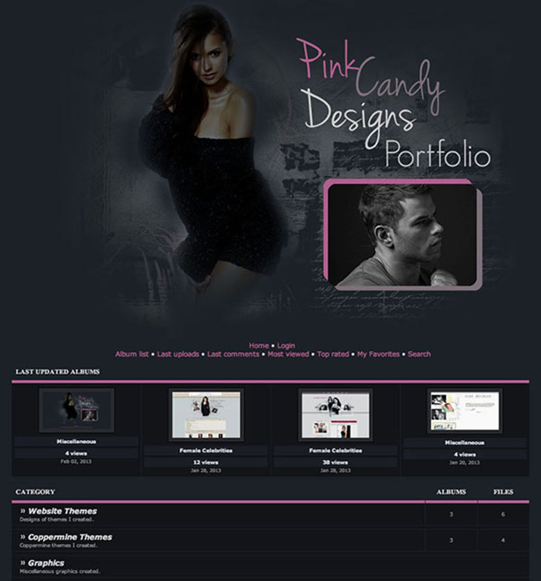
My first faniste I built for a client....
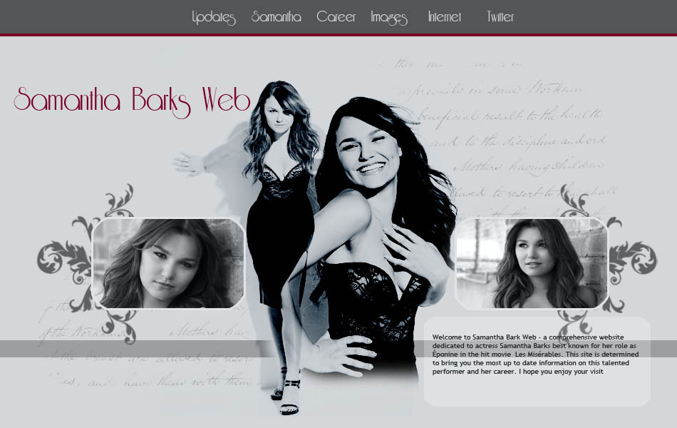
Now What?!?!
Work...
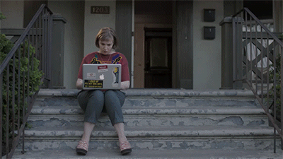
And that my friends is how this girl turned into a...
badass
developer
Thank you!
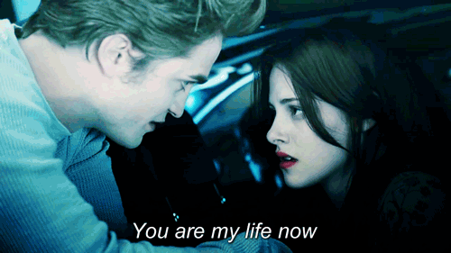
LinkedIn: /in/tairema
Twitter: @tairemadailey